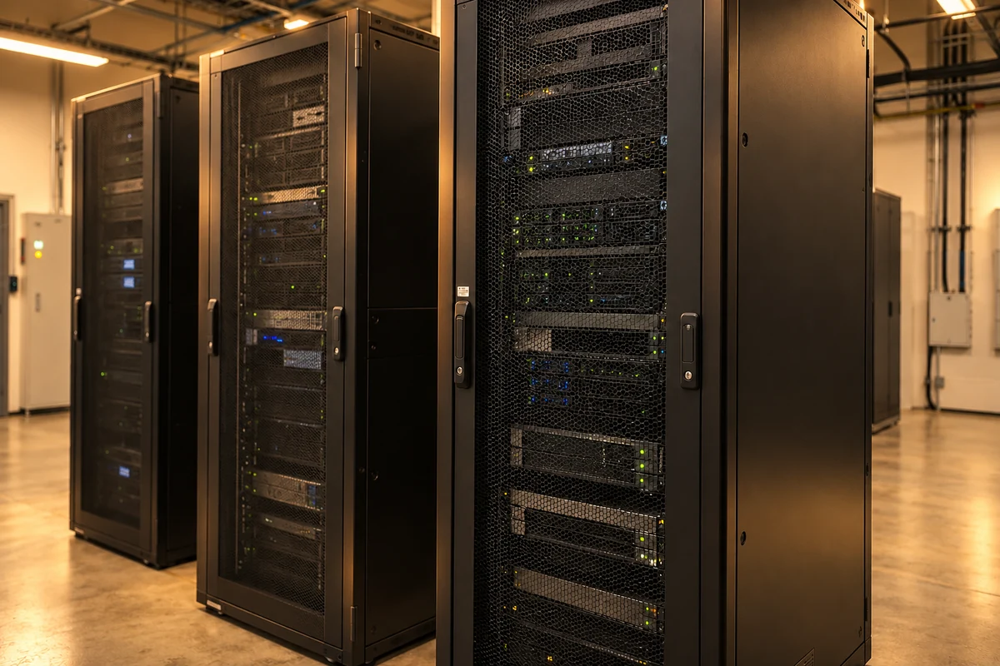
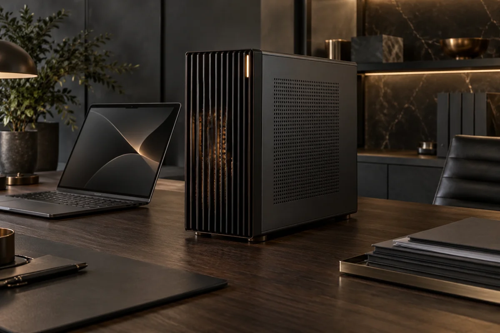
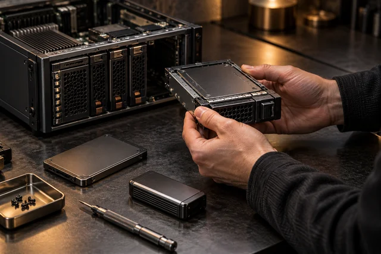
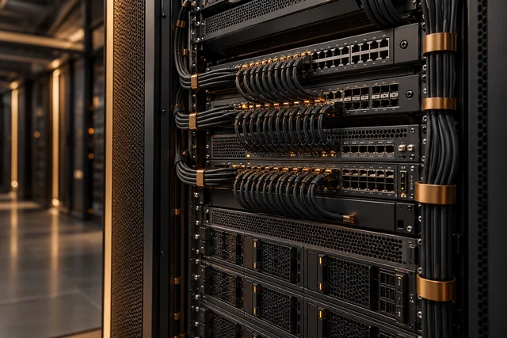

Vom Büro
bis zur Baustelle.
Aufträge, Fotos und Unterlagen dort verfügbar machen, wo Ihr Team sie braucht. Mit passenden Geräten, geregelten Zugängen und einer verlässlichen Datenablage.
Abläufe vereinfachen →
IT SYSTEMHAUS STUTTGART · OPEN SOURCE FIRST
Wir richten Ihre IT ein, schützen Ihre Daten und kümmern uns um Updates und den laufenden Betrieb. Für Handwerk, Architekturbüros und Kanzleien in Stuttgart und Umgebung. Offene Lösungen sind unsere erste Wahl. Sie wissen vor der Beauftragung, was wir übernehmen und was es kostet.
Programme, Daten und Geräte passend zusammenbringen.
02 / ENTLASTUNGKlare Zuständigkeiten für Wartung und Unterstützung.
03 / KONTROLLEOffene Lösungen und dokumentierte Systeme erleichtern spätere Wechsel.
IT-INFRASTRUKTUR-CHECK
Fünf Fragen aus Ihrem Betriebsalltag. Sie erhalten direkt eine Übersicht mit Ansatzpunkten – ohne technisches Vorwissen.
Ohne Anmeldung. Die Antworten bleiben in Ihrem Browser.
Die Selbsteinschätzung ersetzt keine technische Prüfung.
IHRE AUSGANGSLAGE
Können Sie Daten wiederherstellen? Wer kümmert sich um Updates? Auch „Weiß ich nicht“ ist eine hilfreiche Antwort.
FÜR WEN WIR ARBEITEN
Jeder Betrieb arbeitet anders. Wir richten die IT an Ihren Abläufen aus.
Aufträge, Fotos und Unterlagen dort verfügbar machen, wo Ihr Team sie braucht. Mit passenden Geräten, geregelten Zugängen und einer verlässlichen Datenablage.
Abläufe vereinfachen →Große Planungsdateien speichern, mit Projektpartnern teilen und auch unterwegs darauf zugreifen. Wir berücksichtigen Ihre CAD- und BIM-Anwendungen bei der Planung.
Die Grundlage schaffen →Mandantenunterlagen mit passenden Berechtigungen und Sicherungen schützen. Kanzleisoftware und beA-Arbeitsplätze stimmen wir mit Ihren Softwareanbietern ab.
Daten besser schützen →WAS WIR LIEFERN
IT-Betreuung für Unternehmen in Stuttgart und Umgebung.
Programme, Dateien und Geräte sollen im Alltag zusammenspielen. Dafür planen und betreuen wir Server, Netzwerke und Sicherungen – bevorzugt mit offenen Plattformen wie Linux und Proxmox.
Linux · Proxmox · Windows Server · VMware
Wir regeln, wer auf welche Daten zugreifen darf, sichern Verbindungen ab und planen Schutzmaßnahmen passend zu Ihrem Betrieb.
pfSense · OPNsense · Cisco · HPE Aruba
Dateien gemeinsam nutzen und unterwegs auf Anwendungen zugreifen. Offene Lösungen wie Nextcloud prüfen wir zuerst; vorhandene E-Mail- und Office-Systeme binden wir passend ein.
Nextcloud · Microsoft 365 · Azure · AWS
Wiederkehrende Aufgaben automatisieren und internes Wissen leichter finden. Wir starten mit einem konkreten Anwendungsfall und prüfen Aufwand, Nutzen und Datenzugriffe.
LLMs · Docker · Power Automate · PowerShell
Sie wollen Ihre IT erneuern oder einen Ablauf digitalisieren? Wir klären Anforderungen, vergleichen geeignete Lösungen und planen die nächsten Schritte.
Handwerk · Architektur · Kanzleien · Beratung
Updates kontrolliert einspielen, Systeme und Sicherungen überwachen, Server und Arbeitsplätze betreuen. Sie wählen die Bausteine; Umfang, Betreuungszeiten und Zusatzaufwand werden vereinbart.
Helpdesk · Monitoring · Veeam · Remote
SO ENTSCHEIDEN WIR
01 / Ihren Alltag verstehen.
Welche Programme braucht Ihr Team? Was funktioniert bereits, was hält die Arbeit auf? Daraus ergeben sich die Anforderungen.
02 / Den gesamten Betrieb betrachten.
Open Source First: Wir prüfen offene Lösungen zuerst und wählen nach Ihren Anforderungen. Wir vergleichen Einrichtung, Lizenzen, Betreuung und einen späteren Wechsel. Auch bei Open Source planen wir den Aufwand für Einrichtung, Betrieb und Wartung ein.
03 / Die Entscheidung erklären.
Sie erfahren, welche Lösung wir empfehlen, warum sie passt und wie sie betreut wird. Funktionen, Kosten und mögliche Abhängigkeiten werden nachvollziehbar.
IT-INFRASTRUKTUR
Ob Auftragssoftware, Planungsdateien oder E-Mail: Wir schaffen die technische Grundlage für Ihren Arbeitsalltag. Dafür stimmen wir Geräte, Server und Netzwerk aufeinander ab und planen, wie wichtige Daten nach einem Ausfall zurückkommen.
Infrastruktur einordnen
Was hinter Ihrer IT steckt: Wählen Sie einen Baustein, um direkt zum passenden Leistungsbereich auf dieser Seite zu gelangen. Die Übersicht zeigt mögliche Komponenten, keine feste Netzwerktopologie.
Wir klären, welche Programme unverzichtbar sind, wie viele Menschen damit arbeiten und welche Ausfallzeiten Ihr Betrieb verkraften kann.
Änderungen mit Ihnen abstimmen, Datenübernahmen vorbereiten und einen Rückweg bei Problemen einplanen. Ihr Team erhält eine Einweisung.
Sie erhalten eine Übersicht der Systeme, Zuständigkeiten und Schritte für den Notfall. So bleibt das Wissen auch bei einem Personal- oder Dienstleisterwechsel verfügbar.
CLOUD & HYBRID
Gemeinsame Dateien und Anwendungen sollen dort verfügbar sein, wo Ihr Team arbeitet. Wir prüfen zuerst offene Lösungen wie Nextcloud für Dateiaustausch und Zusammenarbeit. Microsoft 365 oder andere Cloud-Dienste ergänzen wir, wenn sie Ihre Anforderungen besser erfüllen. Funktionen, Datenstandort, Zugriffsrechte und laufende Kosten entscheiden mit.
Nextcloud · Microsoft 365 · Azure · AWS · Google Cloud
Cloud-Projekt besprechenMANAGED SERVICES
Updates, Sicherungen und Fehlermeldungen brauchen Aufmerksamkeit. Wir übernehmen die vereinbarten Aufgaben und sind Ansprechpartner bei Problemen. Sie wissen, was betreut wird, wann wir erreichbar sind und welche Reaktionszeiten gelten.
Wichtige Systeme und Sicherungsmeldungen im Blick behalten.
Meldungen prüfen und die Auswirkungen auf Ihren Betrieb bewerten.
Nach vereinbarter Priorität reagieren und Änderungen abstimmen.
Festhalten, was geändert wurde und was noch zu tun ist.
Wiederkehrenden Problemen auf den Grund gehen.
BAUSTEINE NACH BEDARF
Einzelne Aufgaben oder mehrere Bereiche zusammen: Wir legen Geräte, Systeme, Tätigkeiten und Betreuungszeiten vor Beginn fest. Open-Source-Werkzeuge bevorzugen wir, wo sie die Anforderungen erfüllen.
01 / MANAGED UPDATES
Sicherheits- und Wartungsupdates für vereinbarte Windows- und Linux-Systeme sowie unterstützte Anwendungen. Mit Freigabe, abgestimmten Wartungsfenstern, geplanten Neustarts und dokumentierter Ergebniskontrolle.
Große Versionswechsel, Fachsoftware und Firmware werden gesondert geplant. Fehlgeschlagene Updates werden bewertet; zusätzliche Reparaturarbeiten erfolgen nach Freigabe.
02 / MANAGED MONITORING
Erreichbarkeit, Speicherplatz, Systemzustände und ausgewählte Dienste überwachen. Meldungen werden im vereinbarten Betreuungszeitraum bewertet und an die zuständige Person weitergegeben.
Automatische Überwachung ist keine rund um die Uhr besetzte Bereitschaft. Reaktionszeiten und Bearbeitung werden ausdrücklich vereinbart.
03 / MANAGED BACKUP
Sicherungsaufträge und Fehlermeldungen kontrollieren, Aufbewahrung und getrennte Sicherungsziele abstimmen. Wiederherstellungstests können mit festgelegtem Umfang und Turnus beauftragt werden.
Backup-Speicher, Lizenzen, Wiederherstellungstests und die Wiederherstellung im Ernstfall sind nur enthalten, wenn sie im Angebot aufgeführt sind.
04 / MANAGED SERVER & DIENSTE
Vereinbarte Server, virtuelle Maschinen und Dienste wie Nextcloud betreuen. Systemzustand, Updates, Zertifikate und Konfigurationen nach einem dokumentierten Wartungsplan bearbeiten.
Betreute Systeme und Aufgaben werden einzeln festgelegt. Migrationen, neue Funktionen und größere Umbauten sind separate Projekte.
05 / MANAGED NETZWERK
Firewall, VPN und WLAN im vereinbarten Umfang betreuen. Konfigurationen sichern, Zugangsänderungen dokumentieren und Wartung mit dem Betrieb abstimmen.
Hardwaretausch, Verkabelung und Vor-Ort-Einsätze werden separat kalkuliert. Firmwarewechsel benötigen eine abgestimmte Freigabe.
06 / MANAGED ARBEITSPLÄTZE
Vereinbarte Computer und Standardanwendungen betreuen, Gerätebestand dokumentieren und Benutzeränderungen durchführen. Anwenderhilfe kann zusätzlich beauftragt werden.
Kein unbegrenzter Helpdesk: Support wird nach Aufwand oder einem ausdrücklich vereinbarten Kontingent abgerechnet.
Die Übernahme beginnt mit einer gesondert kalkulierten Bestandsaufnahme und Einrichtung. Betreut werden technisch unterstützte Systeme mit geeigneten Zugängen, notwendigen Lizenzen und abgestimmten Sicherungs- oder Wiederherstellungswegen.
Das Angebot nennt Geräteanzahl, Wartungsturnus, Aufgaben, Betreuungszeiten, Reaktionszeiten und Zusatzkosten. Für Änderungen planen wir einen geeigneten Rückweg; nicht jedes Update lässt sich einfach deinstallieren. Nicht enthaltene Arbeiten werden vor ihrer Durchführung abgestimmt.
Betreuungsumfang anfragen →
KI IM UNTERNEHMEN
Anleitungen durchsuchen, Dokumente zusammenfassen oder wiederkehrende Arbeitsschritte vorbereiten: Wir prüfen, wo KI Ihrem Team hilft. Anwendungsfall, Leistungsumfang und Anforderungen an die Ergebnisse werden vor der Umsetzung vereinbart. Zugriffsrechte und Datenwege werden vorab festgelegt; wichtige Ergebnisse müssen Menschen prüfen.
Ausgangslage prüfenIT-SICHERHEIT
Ein Passwort oder eine Firewall allein reichen nicht. Wir kombinieren geregelte Zugänge, gepflegte Geräte und getrennte Sicherungen. So reduzieren wir Risiken und bereiten Ihren Betrieb auf Störungen vor.
FÜNF BEREICHE. EIN SCHUTZKONZEPT.
Die Maßnahmen greifen ineinander. Welche Sie brauchen, richtet sich nach Ihren Daten, Systemen und Arbeitsabläufen.
Mit dem IT-Check beginnen01 / ZUGÄNGE
Persönliche Konten, passende Berechtigungen und eine zusätzliche Anmeldebestätigung schützen den Zugang zu Ihren Daten.
02 / NETZWERK
Firewalls, getrennte Netzwerkbereiche und verschlüsselte Fernzugänge begrenzen unerwünschte Verbindungen.
03 / GERÄTE
Abgestimmte Updates, sichere Einstellungen und gepflegte Systeme reduzieren bekannte Schwachstellen.
04 / SICHERUNGEN
Getrennte Sicherungen, getestete Wiederherstellung und dokumentierte Schritte bereiten den Wiederanlauf vor.
05 / ÜBERWACHUNG
Wir legen fest, welche Hinweise geprüft werden, wer reagiert und welche Schritte bei Auffälligkeiten folgen.
Den konkreten Umfang, Zuständigkeiten und Reaktionszeiten vereinbaren wir vor Beginn der Betreuung.
ABLAUF

Wir verstehen Ihre Anforderung, Sie verstehen unsere Arbeitsweise. Danach wissen Sie, ob es passt.
Ist-Zustand dokumentieren, Ziel-Zustand definieren, konkretes Angebot — Festpreis oder Aufwand, transparent kalkuliert.
Strukturierte Arbeit mit laufender Dokumentation. Sie wissen jederzeit, wo wir stehen.
Sie erhalten die vereinbarte Dokumentation und eine Einweisung. Zugänge und Zuständigkeiten werden so übergeben, dass Sie handlungsfähig bleiben.
HANDWERK & DIGITALISIERUNG
Fotos vom Einsatz, Arbeitszeiten und Auftragsunterlagen müssen nicht an verschiedenen Orten liegen. Wir prüfen mit Ihnen, welche Arbeitsschritte sich verbinden lassen und welche Software dafür bereits vorhanden ist.
Wir beginnen mit einem überschaubaren Ablauf – etwa der Übernahme von Arbeitszeiten ins Büro. Gemeinsam prüfen wir, ob der neue Weg Arbeit spart und Ihr Team ihn im Alltag nutzen kann.
IT-Check startenWOMIT WIR ARBEITEN

TRANSPARENTE PREISE
Einzelauftrag: ein konkretes Anliegen lösen. Wartungsvertrag: festgelegte Systeme regelmäßig pflegen. Managed IT: vereinbarte Betriebs- und Betreuungsaufgaben für mehrere IT-Bereiche bündeln.
EINMALIG
95 € / Std.
Für ein konkretes Problem, eine Beratung oder ein abgegrenztes Projekt.
MONATLICH
ab 299 € / Mo.
Für die regelmäßige Pflege festgelegter Systeme. Sie erhalten vereinbarte Kontrollen, Wartung und eine Dokumentation der Arbeiten.
INDIVIDUELL
Auf Anfrage
Für die laufende Betreuung mehrerer Bereiche – etwa Arbeitsplätze, Server und Netzwerk. Zusätzlich zur Wartung vereinbaren wir, wer Meldungen bearbeitet und bei Störungen welche Aufgaben übernimmt.
Preise für Geschäftskunden, netto; Umsatzsteuer zusätzlich, soweit gesetzlich geschuldet. Beim Wartungsvertrag bestimmen Geräteanzahl, Aufgaben und Wartungsturnus den Monatspreis. Die 299 € sind ein Einstiegspreis, kein Pauschalpreis für Ihren gesamten Betrieb. Supportstunden sind nicht enthalten.
Bestandsaufnahme und Einrichtung werden gesondert kalkuliert. Ebenso Lizenzen, Speicher, Anfahrt und Einsätze außerhalb vereinbarter Zeiten. Zusätzliche Anwenderhilfe und Störungsbehebung kosten 95 € pro Stunde, soweit im Vertrag keine andere Leistung enthalten ist. Sie erhalten den konkreten Umfang und Preis vor der Beauftragung.
WISSEN AUS DER PRAXIS
Eine erfolgreiche Sicherung beweist noch nicht, dass Anwendungen wieder anlaufen. Entscheidend sind getrennte Sicherungsziele, dokumentierte Wiederherstellungsschritte und regelmäßige Tests. Legen Sie fest, wie viel Datenverlust und Ausfallzeit Ihr Betrieb verträgt.
Open Source macht Systeme einsehbar und erleichtert unabhängige Weiterentwicklung. Verlässlichkeit entsteht durch passende Architektur, Updates, Verantwortlichkeiten und Dokumentation. Die Technologie allein ersetzt kein Betriebskonzept.
Ein internes KI-System sollte nur Informationen bereitstellen, auf die die jeweilige Person zugreifen darf. Datenquellen, Rollen, Protokollierung und Löschwege gehören deshalb vor dem ersten produktiven Einsatz auf den Prüfstand.
HÄUFIGE FRAGEN
Ja. Wir betreuen Unternehmen in Stuttgart und Umgebung. Arbeiten an Servern, Verkabelung und Hardware führen wir vor Ort durch. Fernwartung setzen wir ergänzend im Rahmen der vereinbarten Betreuung ein.
Die Reaktionszeiten richten sich nach Ihrem Vertrag, den vereinbarten Betreuungszeiten und der Dringlichkeit. Wir halten diese Regeln vor Beginn der Betreuung fest. Eine Reaktionszeit ist die Zeit bis zur Aufnahme der Bearbeitung, keine Zusage für die vollständige Behebung.
Ja. Wir übernehmen auch Teilbereiche oder fungieren als zweite Meinung. Zum Beispiel bei einem Serverwechsel, bei Sicherheitsfragen oder beim Einstieg in KI. Zuständigkeiten stimmen wir mit Ihnen und dem bestehenden Dienstleister ab.
Nein. Open Source First beschreibt unsere Reihenfolge bei der Auswahl: Wir prüfen offene Lösungen zuerst. Funktionierende Systeme ersetzen wir nicht ohne Grund. Wenn Ihre Fachsoftware oder Zusammenarbeit ein bestimmtes Produkt erfordert, binden wir es ein und erklären die Entscheidung.
Für IT- und Digitalisierungsinvestitionen kommen je nach Vorhaben Förderprogramme oder Förderkredite infrage. Wir prüfen, welche Möglichkeiten zu Ihrem Betrieb passen. Leistungsumfang und Kosten einer Beratung vereinbaren wir vorab.
KONTAKT · IT·WERKSTATT STUTTGART
Beschreiben Sie kurz Ihren Betrieb und was Sie verbessern möchten. Wir klären, welche Unterstützung passt und welche Angaben für ein Angebot benötigt werden. Technisches Vorwissen brauchen Sie dafür nicht.
Schildern Sie Ihr Anliegen. Kostenpflichtige Beratung oder Umsetzung beginnt erst nach Ihrer Beauftragung auf Basis des vereinbarten Umfangs und Preises.